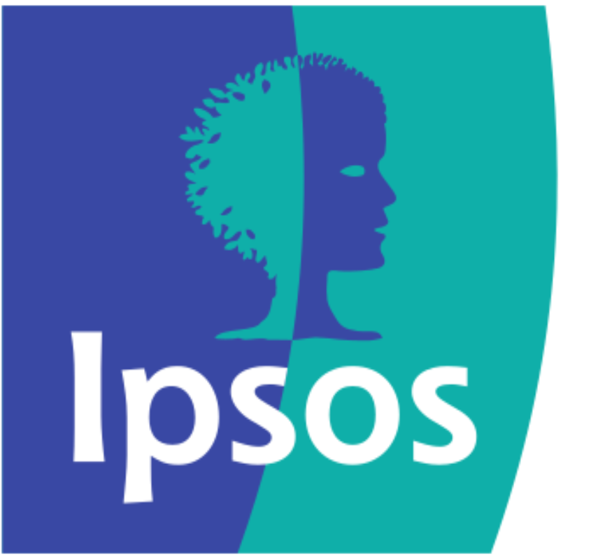

Ernani Hazbolatow
Hi, welcome to my landing page!| I am a first-year Computational Science graduate student at the University of Amsterdam and the Free University of Amsterdam. I intend to concentrate mostly on the use of computational techniques in the financial markets during my studies. In addition, I hope to gain a rich understanding of |
|  | Next to my studies, I work part-time as a data scientist for Ipsos I&O Netherlands. Previously, I worked full-time as a data scientist. At Ipsos I&O, I am primarily responsible for |
>> If you wish to reach out, please send an e-mail ernanihazbolatow123@outlook.com or ernani.hazbolatow@student.uva.nl
📍 Projects

[Still developing 🟨]
I am currently developing an enhanced Limited-memory Broyden–Fletcher–Goldfarb–Shanno (L-BFGS) optimization algorithm by incorporating Nesterov's Accelerated Gradient (NAG) momentum, implemented in R. By combining L-BFGS's efficiency with Nesterov's momentum for faster convergence, the hybrid algorithm aims to improve performance in high-dimensional optimization tasks. By modifying the current state-of-the-art C++ code and porting this code through Rcpp, I expect to see moderate performance gains while retaining the stability of L-BFGS. ... See More